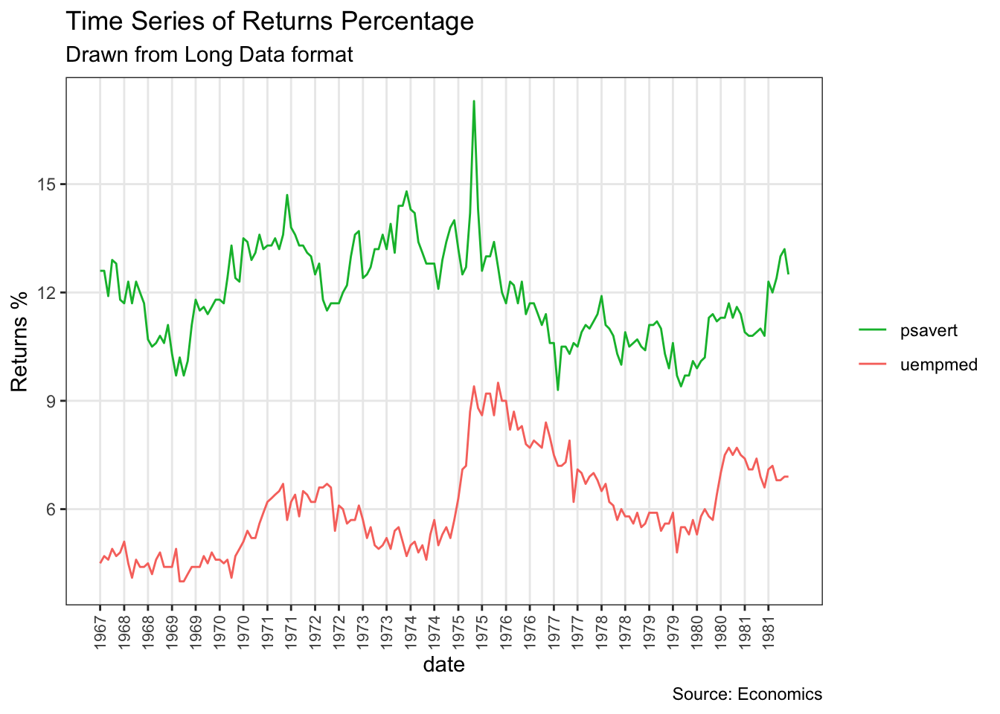

第 9 章 变化趋势图
## 加载数据集
library(ggplot2)
library(plotrix)
data("midwest", package = "ggplot2") ## 全局配色、主题设置。注意，本文使用离散色阶，如果需要使用连续色阶，则需要重写。
options(scipen=999) # 关掉像 1e+48 这样的科学符号
# 颜色设置（灰色系列）
cbp1 <- c("#999999", "#E69F00", "#56B4E9", "#009E73",
"#F0E442", "#0072B2", "#D55E00", "#CC79A7")
# 颜色设置（黑色系列）
cbp2 <- c("#000000", "#E69F00", "#56B4E9", "#009E73",
"#F0E442", "#0072B2", "#D55E00", "#CC79A7")
ggplot <- function(...) ggplot2::ggplot(...) +
scale_color_manual(values = cbp1) +
scale_fill_manual(values = cbp1) + # 注意: 使用连续色阶时需要重写
theme_bw()9.1 时间序列图
library(ggplot2)
library(ggfortify)
theme_set(theme_classic())
# 绘图
autoplot(AirPassengers) +
labs(title="AirPassengers") +
theme(plot.title = element_text(hjust=0.5))library(ggplot2)
theme_set(theme_classic())
# 使用默认的时间跨度
ggplot(economics, aes(x=date)) +
geom_line(aes(y=pce)) +
labs(title="Time Series Chart",
caption="Source: Economics")
library(ggplot2)
theme_set(theme_classic())
# 使用默认的时间跨度
ggplot(economics, aes(x=date)) +
geom_line(aes(y=pce)) +
labs(title="Time Series Chart",
caption="Source: Economics")library(ggplot2)
library(lubridate)
theme_set(theme_bw())
economics_m <- economics[1:24, ]
# 设定时间跨度为一个月
lbls <- paste0(month.abb[month(economics_m$date)], " ", lubridate::year(economics_m$date))
brks <- economics_m$date
# 绘图
ggplot(economics_m, aes(x=date)) +
geom_line(aes(y=pce)) +
scale_x_date(labels = lbls,
breaks = brks) + # change to monthly ticks and labels
theme(axis.text.x = element_text(angle = 90, vjust=0.5), # rotate x axis text
panel.grid.minor = element_blank()) # turn off minor gridlibrary(ggplot2)
library(lubridate)
theme_set(theme_bw())
df <- economics_long[economics_long$variable %in% c("psavert", "uempmed"), ]
df <- df[lubridate::year(df$date) %in% c(1967:1981), ]
# labels and breaks for X axis text
brks <- df$date[seq(1, length(df$date), 12)]
lbls <- lubridate::year(brks)
# 绘图
ggplot(df, aes(x=date)) +
geom_line(aes(y=value, col=variable)) +
labs(title="Time Series of Returns Percentage",
subtitle="Drawn from Long Data format",
caption="Source: Economics",
y="Returns %",
color=NULL) + # title and caption
scale_x_date(labels = lbls, breaks = brks) + # change to monthly ticks and labels
scale_color_manual(labels = c("psavert", "uempmed"),
values = c("psavert"="#00ba38", "uempmed"="#f8766d")) + # line color
theme(axis.text.x = element_text(angle = 90, vjust=0.5, size = 8), # rotate x axis text
panel.grid.minor = element_blank()) # turn off minor grid
library(ggplot2)
library(lubridate)
theme_set(theme_bw())
df <- economics[, c("date", "psavert", "uempmed")]
df <- df[lubridate::year(df$date) %in% c(1967:1981), ]
# labels and breaks for X axis text
brks <- df$date[seq(1, length(df$date), 12)]
lbls <- lubridate::year(brks)
# plot
ggplot(df, aes(x=date)) +
geom_line(aes(y=psavert, col="psavert")) +
geom_line(aes(y=uempmed, col="uempmed")) +
labs(title="Time Series of Returns Percentage",
subtitle="Drawn From Wide Data format",
caption="Source: Economics", y="Returns %") + # title and caption
scale_x_date(labels = lbls, breaks = brks) + # change to monthly ticks and labels
scale_color_manual(name="",
values = c("psavert"="#00ba38", "uempmed"="#f8766d")) + # line color
theme(panel.grid.minor = element_blank()) # turn off minor grid9.2 堆叠面积图
library(ggplot2)
library(lubridate)
theme_set(theme_bw())
df <- economics[, c("date", "psavert", "uempmed")]
df <- df[lubridate::year(df$date) %in% c(1967:1981), ]
# labels and breaks for X axis text
brks <- df$date[seq(1, length(df$date), 12)]
lbls <- lubridate::year(brks)
# plot
ggplot(df, aes(x=date)) +
geom_area(aes(y=psavert+uempmed, fill="psavert")) +
geom_area(aes(y=uempmed, fill="uempmed")) +
labs(title="Area Chart of Returns Percentage",
subtitle="From Wide Data format",
caption="Source: Economics",
y="Returns %") + # title and caption
scale_x_date(labels = lbls, breaks = brks) + # change to monthly ticks and labels
scale_fill_manual(name="",
values = c("psavert"="#00ba38", "uempmed"="#f8766d")) + # line color
theme(panel.grid.minor = element_blank()) # turn off minor grid9.3 日历热力图
library(ggplot2)
library(plyr)
library(scales)
library(zoo)
df <- read.csv("data/yahoo.csv")
df$date <- as.Date(df$date) # 格式化日期
df <- df[df$year >= 2012, ] # filter reqd years
# 创建月周
df$yearmonth <- as.yearmon(df$date)
df$yearmonthf <- factor(df$yearmonth)
df <- ddply(df,.(yearmonthf), transform, monthweek=1+week-min(week)) # compute week number of month
df <- df[, c("year", "yearmonthf", "monthf", "week", "monthweek", "weekdayf", "VIX.Close")]
head(df)
## year yearmonthf monthf week monthweek weekdayf VIX.Close
## 1 2012 Jan 2012 Jan 1 1 Tue 22.97
## 2 2012 Jan 2012 Jan 1 1 Wed 22.22
## 3 2012 Jan 2012 Jan 1 1 Thu 21.48
## 4 2012 Jan 2012 Jan 1 1 Fri 20.63
## 5 2012 Jan 2012 Jan 2 2 Mon 21.07
## 6 2012 Jan 2012 Jan 2 2 Tue 20.69ggplot(df, aes(monthweek, weekdayf, fill = VIX.Close)) +
geom_tile(colour = "white") +
facet_grid(year~monthf) +
scale_fill_gradient(low="red", high="green") +
labs(x="Week of Month",
y="",
title = "Time-Series Calendar Heatmap",
subtitle="Yahoo Closing Price",
fill="Close")9.4 坡度图
library(dplyr)
theme_set(theme_classic())
source_df <- read.csv("data/cancer_survival_rates.csv")
# 定义函数，来源: https://github.com/jkeirstead/r-slopegraph
tufte_sort <- function(df, x="year", y="value", group="group", method="tufte", min.space=0.05) {
## First rename the columns for consistency
ids <- match(c(x, y, group), names(df))
df <- df[,ids]
names(df) <- c("x", "y", "group")
## Expand grid to ensure every combination has a defined value
tmp <- expand.grid(x=unique(df$x), group=unique(df$group))
tmp <- merge(df, tmp, all.y=TRUE)
df <- mutate(tmp, y=ifelse(is.na(y), 0, y))
## Cast into a matrix shape and arrange by first column
require(reshape2)
tmp <- dcast(df, group ~ x, value.var="y")
ord <- order(tmp[,2])
tmp <- tmp[ord,]
min.space <- min.space*diff(range(tmp[,-1]))
yshift <- numeric(nrow(tmp))
## Start at "bottom" row
## Repeat for rest of the rows until you hit the top
for (i in 2:nrow(tmp)) {
## Shift subsequent row up by equal space so gap between
## two entries is >= minimum
mat <- as.matrix(tmp[(i-1):i, -1])
d.min <- min(diff(mat))
yshift[i] <- ifelse(d.min < min.space, min.space - d.min, 0)
}
tmp <- cbind(tmp, yshift=cumsum(yshift))
scale <- 1
tmp <- melt(tmp, id=c("group", "yshift"), variable.name="x", value.name="y")
## Store these gaps in a separate variable so that they can be scaled ypos = a*yshift + y
tmp <- transform(tmp, ypos=y + scale*yshift)
return(tmp)
}
plot_slopegraph <- function(df) {
ylabs <- subset(df, x==head(x,1))$group
yvals <- subset(df, x==head(x,1))$ypos
fontSize <- 3
gg <- ggplot(df,aes(x=x,y=ypos)) +
geom_line(aes(group=group),colour="grey80") +
geom_point(colour="white",size=8) +
geom_text(aes(label=y), size=fontSize, family="American Typewriter") +
scale_y_continuous(name="", breaks=yvals, labels=ylabs)
return(gg)
}
## 准备数据
df <- tufte_sort(source_df,
x="year",
y="value",
group="group",
method="tufte",
min.space=0.05)
df <- transform(df,
x=factor(x, levels=c(5,10,15,20),
labels=c("5 years","10 years","15 years","20 years")),
y=round(y))
## 绘图
plot_slopegraph(df) + labs(title="Estimates of % survival rates") +
theme(axis.title=element_blank(),
axis.ticks = element_blank(),
plot.title = element_text(hjust=0.5,
family = "American Typewriter",
face="bold"),
axis.text = element_text(family = "American Typewriter",
face="bold"))9.5 季节图
library(ggplot2)
library(forecast)
theme_set(theme_classic())
# 使用子集数据
nottem_small <- window(nottem, start=c(1920, 1), end=c(1925, 12)) # 使用较小时间窗的子集ggseasonplot(nottem_small) +
labs(title="Seasonal plot: Air temperatures at Nottingham Castle")
ggseasonplot(AirPassengers) +
labs(title="Seasonal plot: International Airline Passengers")